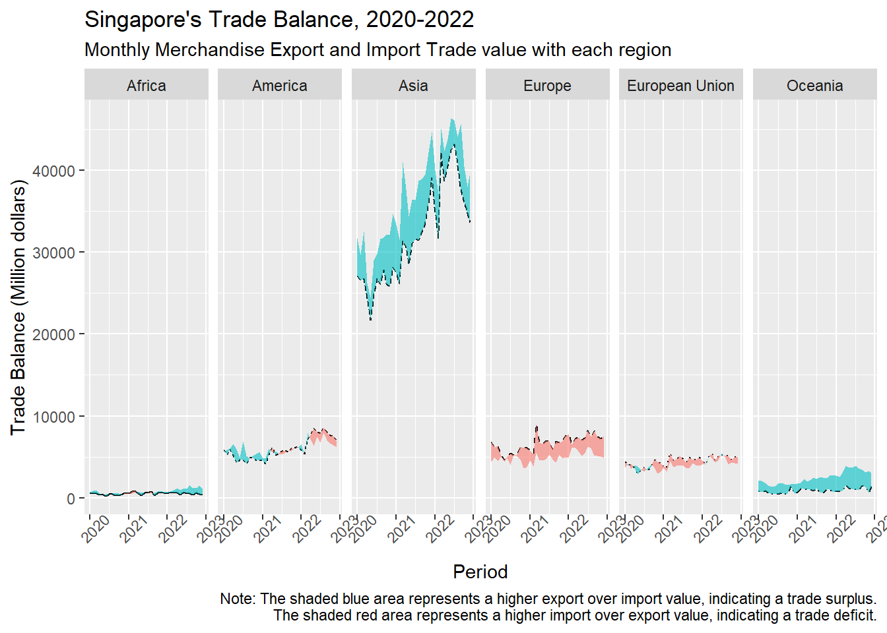
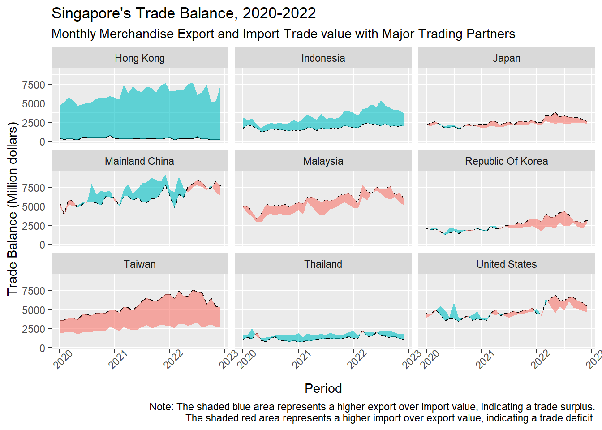
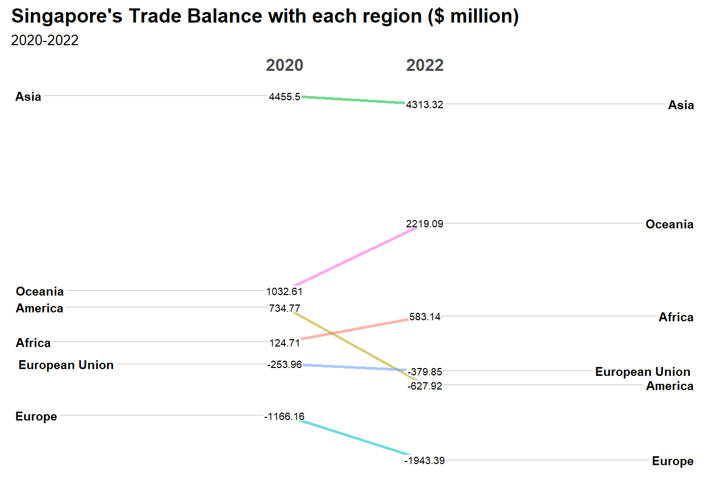
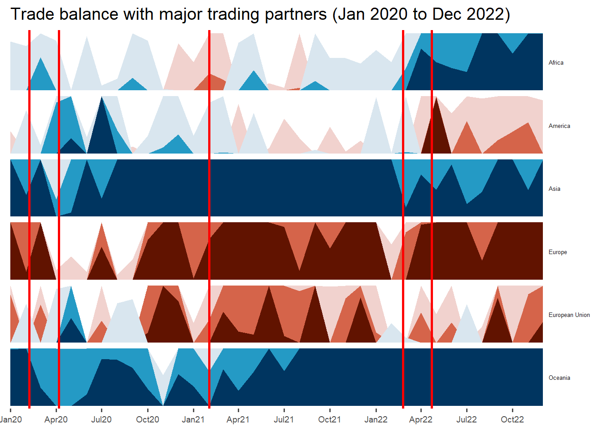
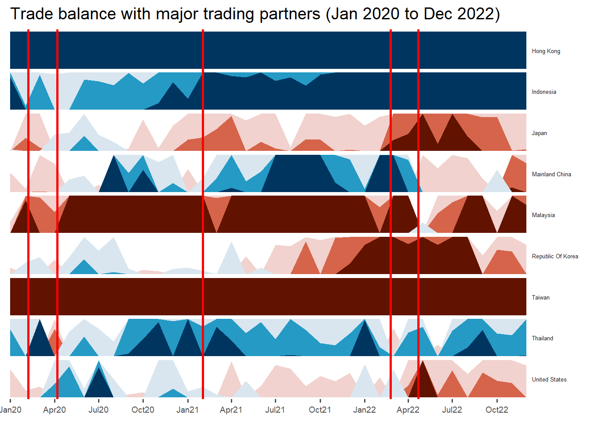

In this take-home exercise, I will uncover the impact of COVID-19 as well as the global economic and political dynamic in 2022 on Singapore’s bi-lateral trade (i.e. Import, Export and Trade Balance) by using appropriate analytical visualisation techniques learned in Lesson 6: It’s About Time.
Merchandise Trade provided by Department of Statistics, Singapore (DOS) will be used to prepare the analytical visualisation and processed by RStudio tidyverse family of packages and visualized by ggplot2 and its extensions as well as other R packages. The study period will be between January 2020 to December 2022.
2. Preparation
2.1 Installing and launching R packages
The code chunk below uses p_load() of pacman package to check if the various packages used for the visual analysis are installed in the computer. If they are, then they will be launched into R.
The code chunk below imports merchandisetrade.xlsx from the data folder into R by using read_excel() of readr and save it as 2 tibble data frames called import_data1 and export_data1.
It also filters for January 2020 to December 2022 data.
The table has data for each region (unit in ‘Millions’) and for each country (unit in ’Thousands). We will split them into separate tables so that we can analyse them cleanly. We should compare regions with other regions and countries with other countries.
# A tibble: 6 × 3
period country import
<date> <chr> <dbl>
1 2020-01-01 Africa 529.
2 2020-02-01 Africa 666.
3 2020-03-01 Africa 559.
4 2020-04-01 Africa 373.
5 2020-05-01 Africa 410.
6 2020-06-01 Africa 238.
# A tibble: 6 × 3
period country export
<date> <chr> <dbl>
1 2020-01-01 Africa 722.
2 2020-02-01 Africa 841
3 2020-03-01 Africa 916.
4 2020-04-01 Africa 569.
5 2020-05-01 Africa 413.
6 2020-06-01 Africa 452.
# A tibble: 6 × 5
period region import export tradebalance
<date> <chr> <dbl> <dbl> <dbl>
1 2020-01-01 Africa 529. 722. 193.
2 2020-02-01 Africa 666. 841 175.
3 2020-03-01 Africa 559. 916. 357.
4 2020-04-01 Africa 373. 569. 196.
5 2020-05-01 Africa 410. 413. 3.20
6 2020-06-01 Africa 238. 452. 214.
3. Analysis of Bi-lateral trade time trends
In this section, we use a cycle plot, braid graph, slope graph and horizontal chart to visualise how imports, exports and trade balance has changed between January 2020 to December 2022. This will show us how the bi-lateral trade was impacted when the first COVID-19 case in Singapore was confirmed on 23 January 2020 as well as the global economic and political dynamic in 2022 such as the Russian-Ukraine crisis.
3.1 Cycle Plot
We will create the cycle plot to visualise the trends between 2020 to 2022 for each month for Mainland China, United States, Malaysia which are Singapore’s top 3 trading partners.
Singapore’s trade balance with China changed from negative (trade deficit) to positive (trade surplus) from 2020 to 2021 and increased from 2021 to 2022. We can see that this is because exports to China increased.
April to December:
There is an inverted V shape. Singapore’s trade balance with China improved from 2020 to 2021 but dropped from 2021 to 2022. This is because exports increased between 2020 to 2021 but dropped from 2021 to 2022. Meanwhile, imports increased from 2021 to 2022 for the months of May to November. Singapore’s increase in imports from China in that period is consistent with the increase in exports of China in that period as reported due to China’s economy opening up.
We are unable to see the typical steady state monthly trends that could possibly be seen in earlier years because of the extraordinary circumstances and geopolitical events between 2021 to 2022.
ii) United States
Code
us <-ggplot() +geom_line(data=unitedstates,aes(x=year, y=`tradebalance`, group=month), colour="black") +geom_line(data=unitedstates,aes(x=year, y=`import`, group=month), colour="orange") +geom_line(data=unitedstates,aes(x=year, y=`export`, group=month), colour="blue") +geom_hline(aes(yintercept=avgtradebalance), data=hline.data.us, linetype=6, colour="red", size=0.5) +facet_grid(~month) +labs(axis.text.x =element_blank(),title ="Singapore's Trade Balance with United States, Jan 2020-Dec 2022") +xlab("Year-over-year Performance") +ylab("Trade Balance (Thousand dollars)") +theme(axis.text.x =element_text(angle =90))ggplotly(us)
Analysis:
Singapore’s trade balance with the United States changed from positive (trade surplus) to negative (trade deficit) to from 2020 to 2022 for most months except for January and March.
Singapore could have had a trade surplus with the United States in 2020 because Singapore imported less in general due to the onset of Covid19. We see that from 2021 onwards, imports from United States generally shot up. The trend of having a trade deficit with United States from April to December in 2022 seems to be consistent with the trend with China. Singapore seems to be importing much more from both countries from April to December 2022 compared to the years before.
iii) Malaysia
Code
m <-ggplot() +geom_line(data=malaysia,aes(x=year, y=`tradebalance`, group=month), colour="black") +geom_line(data=malaysia,aes(x=year, y=`import`, group=month), colour="orange") +geom_line(data=malaysia,aes(x=year, y=`export`, group=month), colour="blue") +geom_hline(aes(yintercept=avgtradebalance), data=hline.data.msia, linetype=6, colour="red", size=0.5) +facet_grid(~month) +labs(axis.text.x =element_blank(),title ="Singapore's Trade Balance with Malaysia, Jan 2020-Dec 2022") +xlab("Year-over-year Performance") +ylab("Trade Balance (Thousand dollars)") +theme(axis.text.x =element_text(angle =90))ggplotly(m)
Analysis:
Singapore’s trade balance with Malaysia seemed to have improved (reduction of trade deficit) for most months between 2021 to 2022 except for January, March, September and November. From the imports and exports we can see that both have generally increased between 2020 to 2022 for all months, although exports increase at a slightly faster rate due to increase in shipments of oil as reported.
3.2 Braid graph
We will create the Braid graph to visualise how trade balance has changed between trade surplus and trade deficit between January 2020 to December 2022.
i) By Region
The code chunk below creates the Braid graph to visualise how trade balance has changed between 2020 to 2022 for each of regions.
Code
ggplot() +geom_line(aes(period, import, linetype = region), data = trade_balance_region) +geom_braid(aes(period, ymin = import, ymax = export, fill = import < export), data = trade_balance_region, alpha =0.6) +guides(linetype ="none", fill ="none") +labs(axis.text.x =element_blank(),title ="Singapore's Trade Balance, 2020-2022",subtitle ="Monthly Merchandise Export and Import Trade value with each region",caption ="Note: The shaded blue area represents a higher export over import value, indicating a trade surplus.\n The shaded red area represents a higher import over export value, indicating a trade deficit.") +xlab("Period") +ylab("Trade Balance (Million dollars)") +facet_grid(~ region) +theme(axis.text.x =element_text(angle =45))

Analysis:
From the braid graph, we can see that Singapore has maintained mostly a trade surplus with Africa, Asia and Oceania except for some months. Similarly, Singapore has maintained mostly a trade deficit with Europe and European Union except for some months. In terms of trade balance with America, Singapore started off with mostly a trade surplus in 2020 but fluctuated between trade surplus and deficit in 2021 before having mostly a trade deficit in 2022.
The code chunk below creates the Braid graph to visualise how trade balance has changed between 2020 to 2022 for each of Singapore’s major trading partner in terms of merchandise trade in 2022 based on Singstat.
Code
ggplot() +geom_line(aes(period, import, linetype = country), data = trade_balance_country_braid) +geom_braid(aes(period, ymin = import, ymax = export, fill = import < export), data = trade_balance_country_braid, alpha =0.6) +guides(linetype ="none", fill ="none") +labs(axis.text.x =element_blank(),title ="Singapore's Trade Balance, 2020-2022",subtitle ="Monthly Merchandise Export and Import Trade value with Major Trading Partners",caption ="Note: The shaded blue area represents a higher export over import value, indicating a trade surplus.\n The shaded red area represents a higher import over export value, indicating a trade deficit.") +xlab("Period") +ylab("Trade Balance (Million dollars)") +facet_wrap(~ country) +theme(axis.text.x =element_text(angle =45))

Analysis:
From the Braid graph, we can see that Singapore has consistently maintained a trade surplus with Hong Kong and Indonesia as well as a trade deficit with Taiwan throughout 2020 to 2022. It has maintained mostly a trade surplus with Thailand and mostly a trade deficit with Malaysia except for certain months. Meanwhile, trade balance fluctuated for Mainland China and United States. For Japan and Republic of Korea, trade fluctuated in 2020 to 2021 but became mostly a trade deficit in 2022.
3.3 Slope Graph
We will create the slope graph to visualise how trade balance has changed between 2020 to 2022.
i) By Region
The code chunk below creates the slope graph to visualise how trade balance has changed between 2020 to 2022 for each of regions.
Code
trade_balance_region %>%mutate(year =factor(year)) %>%filter(year %in%c(2020, 2022)) %>%group_by(region, year) %>%summarise(avgtradebalance =round(mean(`tradebalance`),2)) %>%newggslopegraph(year, avgtradebalance, region,Title ="Singapore's Trade Balance with each region ($ million)",SubTitle ="2020-2022",Caption ="")

Analysis:
From the slope graph, we can see that Singapore’s trade balance worsened for Asia, America, European Union and Europe, but improved for Oceania and Africa between 2020 and 2022. America which ranked 3 in terms of trade surplus in 2020 became the second highest region in terms of trade deficit in 2022. Meanwhile, both Africa and the European Union over took America in terms of improvement of trade balance. The trade surplus with Africa became higher although trade deficit with European Union worsened slightly.
ii) By Major Trading Partner
The code chunk below creates the slope graph to visualise how trade balance has changed between 2020 to 2022 for each of Singapore’s major trading partner in terms of merchandise trade in 2022 based on Singstat.
Singapore’s trade balance for almost all the major trading partners worsened for almost all the countries except for Hong Kong, Indonesia, Thailand and Malaysia. The ranks remained mostly the same except for the follow countries:
United States where Singapore had the 4th highest trade surplus with in 2020 became the 4th highest in terms of trade deficit in 2022, being overtaken by Mainland China and Japan.
Republic of Korea which had the 6th highest trade surplus in 2020 became the 2nd highest in terms of trade deficit in 2022, being overtaken by Japan and Malaysia.
3.4 Horizon graph
We will create the Horizon graph to visualise how trade balance has decreased (in red) and increased (in blue) between January 2020 to December 2022. I set the origin as 0 since there is positive trade balance (trade surplus) and negative trade balance (trade deficit).
I added in some vertical lines which represent 5 significant events between 2020-2022:
7 Feb 2020 - In view of Covid-19, Disease Outbreak Response System Condition (DORSCON) was changed to orange which signals that the disease is severe and there is widespread transmission from unknown sources.
7 April 2020 - Circuit Breaker begins.
1 February 2021 - Senior Minister of State for Health announced that all polyclinics nationwide would begin offering COVID-19 vaccinations.
24 February 2022 - Russia invades Ukraine.
22 April 2022 - MOH announced that from 26 April, Singapore’s DORSCON level would be lowered from Orange to Yellow; limits on groups and safe distancing would no longer be required, with all employees allowed to return to the workplace.
The code chunk below mutates the period to year-month-date:
The code chunk below creates the Horizon graph to visualise how trade balance has increased and decreased between 2020 to 2022 for each of the regions. I decided not to use the horizon scale above as the visualisation is not clear.
Code
trade_balance_region %>%ggplot() +geom_horizon(aes(x = period, y=tradebalance), origin =0, horizonscale =6)+facet_grid(`region`~.) +theme_few() +scale_fill_hcl(palette ='RdBu') +theme(panel.spacing.y=unit(0, "lines"), strip.text.y =element_text(size =5, angle =0, hjust =0),legend.position ='none',axis.text.y =element_blank(),axis.text.x =element_text(size=7),axis.title.y =element_blank(),axis.title.x =element_blank(),axis.ticks.y =element_blank(),panel.border =element_blank() ) +scale_x_date(expand=c(0,0), date_breaks ="3 month", date_labels ="%b%y") +ggtitle('Trade balance with major trading partners (Jan 2020 to Dec 2022)') +geom_vline(xintercept =as.Date("2020-02-07"), color ="red", size =1) +geom_vline(xintercept =as.Date("2020-04-07"), color ="red", size =1) +geom_vline(xintercept =as.Date("2021-02-01"), color ="red", size =1) +geom_vline(xintercept =as.Date("2022-02-24"), color ="red", size =1) +geom_vline(xintercept =as.Date("2022-04-22"), color ="red", size =1)

Analysis:
With the horizontal plot, we can clearly see how the trade balance fluctuated for each region on the same scale, blue representing trade surplus and red representing trade deficit. For example, we see that Singapore has been maintaining a high trade surplus with Asia throughout between July 2020 to January 2022. In the same period, Singapore had fluctuating trade deficit with Europe.
We can also see from the red vertical lines that fluctuations seem to happen when there are major significant events. For example, when Russia invaded Ukraine as shown by the second right most vertical line, we can see that trade with Asia and Europe started to fluctuate more greatly.
i) By Major Trading Partner
The code chunk below creates the Horizon graph to visualise how trade balance has increased and decreased between 2020 to 2022 for each of Singapore’s major trading partner in terms of merchandise trade in 2022 based on Singstat. I decided not to use the horizon scale above as the visualisation is not clear.
Code
trade_balance_country %>%filter(country %in%c("United States", "Japan", "Mainland China", "Hong Kong", "Malaysia", "Taiwan", "Republic Of Korea", "Thailand", "Indonesia")) %>%ggplot() +geom_horizon(aes(x = period, y=tradebalance), origin =0, horizonscale =6)+facet_grid(`country`~.) +theme_few() +scale_fill_hcl(palette ='RdBu') +theme(panel.spacing.y=unit(0, "lines"), strip.text.y =element_text(size =5, angle =0, hjust =0),legend.position ='none',axis.text.y =element_blank(),axis.text.x =element_text(size=7),axis.title.y =element_blank(),axis.title.x =element_blank(),axis.ticks.y =element_blank(),panel.border =element_blank() ) +scale_x_date(expand=c(0,0), date_breaks ="3 month", date_labels ="%b%y") +ggtitle('Trade balance with major trading partners (Jan 2020 to Dec 2022)') +geom_vline(xintercept =as.Date("2020-02-07"), color ="red", size =1) +geom_vline(xintercept =as.Date("2020-04-07"), color ="red", size =1) +geom_vline(xintercept =as.Date("2021-02-01"), color ="red", size =1) +geom_vline(xintercept =as.Date("2022-02-24"), color ="red", size =1) +geom_vline(xintercept =as.Date("2022-04-22"), color ="red", size =1)

Analysis:
With the horizontal plot, we can clearly see how the trade balance fluctuated for each major trading partner on the same scale, blue representing trade surplus and red representing trade deficit. For example, we see that Singapore has been maintaining a high trade surplus with Hong Kong and high trade deficit with Taiwan throughout the entire period from 2020 to 2022.
We can also see from the red vertical lines that fluctuations seem to happen when there are major significant events. For example, this is quite clearly seen by the greater fluctuations around the left 2 red lines when Covid-19 first began.
4. Learning points
For this assigment, I learnt that there are many different ways of representing time series data which can reveal different patterns with different interpretations. The charts help us to visualise how trends fluctuate over time at the high level and compare between different observations.
I find the cycle plot very useful as most of the the other charts only compare across time chronologically. However, the cycle plot can isolate the months and compare by month across years, which allows us to account for seasonality in our analysis.